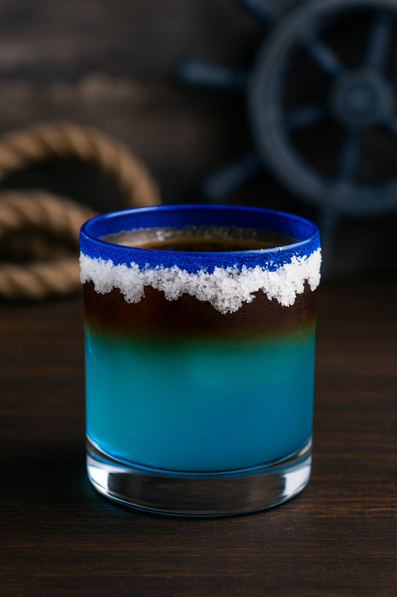

The Rim Runner™ — Sunset Protocol
The adventure is real. The evenings are extraordinary. When the anchor is set and the day is done, the Rim Runner™ gets made. This is not the reward for the expedition. It is the other half of it.

The Rim Runner™ · Sunset Protocol

Some Nights, It's Champagne
Most nights it's the Rim Runner™. Some nights — a milestone stop, a hard-won crossing, a country flag added to the count — call for something with a cork. Either way, the ritual is the same: anchor down, day done, toast earned.
Glass & Rim
Heavy rocks glass with a blue rim band. 2 parts coarse sea salt, 1 part sugar. Wet rim with fresh lime. Fill with fresh ice.
Equatorial Blue Base
1½ oz white rum • ¾ oz blue curaçao • 1 oz pineapple juice • ½ oz fresh lime juice • 1 oz coconut water • 1–2 dashes bitters. Shake hard. Strain over ice.
The Dark Storm Cloud
Float ½–¾ oz dark rum over the back of a spoon. Blue below. Dark above. Do not stir.
Glass & Rim — Bourbon Bomb
Same rocks glass, rimmed with 2 parts coarse sea salt, 1 part sugar — wet with fresh orange instead of lime. Fill with fresh ice.
Equatorial Amber Base
1½ oz bourbon (90–100 proof) • ¾ oz blue curaçao • 1 oz pineapple juice • ½ oz fresh lemon juice • 1 oz coconut water • 2 dashes Angostura bitters. Shake hard. Strain over ice.
The Dark Barrel Cloud
Float ½–¾ oz cask-strength or barrel-proof bourbon over the back of a spoon. Same physics as the dark rum float — higher proof sits rather than sinks.
The Rim Runner™ anthem — stadium island-rock, sunset-protocol energy, made for the moment the anchor goes down.